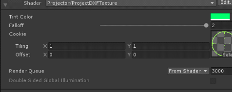
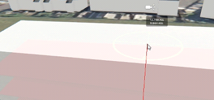

GUI Tool
Introduction
Thoughout my 8 months at Realsim I had the privilage of being tasked with adding, editing or fixing the GUI tools used in the PC and web template Scene for compiling Scene viewers. This includes the ICON tool, the tree seasons scripts and bugfixing the existing tools.
Bug Fixes for existing tools
Two problems I had to solve were getting the sea level and ground level measurments to be correct when using the measuring tool. This was simply a ray casting through any objects on the building layer until it hit the ground and reached zero on the y position. Then displaying the lengths on the GUI. I added a debug drawline for future devs to see if they have gismos turned on. Another problem with the tool was the fact that the projector passes through objects and hits every object it passes through. I belive I solved this problem in a more complicated way than was needed but it still gave me the opertunity to learn how to writer standard shader code. I found multiple solutions on line which I murged into one solution allowing the future developer to select a colour for the projection image and set the falloff (how far the projector should pass throgh object in this case).
I also fixed up the height tool and learned all the assocations that were needed for the GUI tools to work. I found the archetecture fo the whole thing to be very neat and easy to understand. Every tool inherited form the base tool class. Every button in the scene would automatically implement the tool based on the gui button controller class. I used the GUI button controller class to change tool tip text or implement GUI tools.